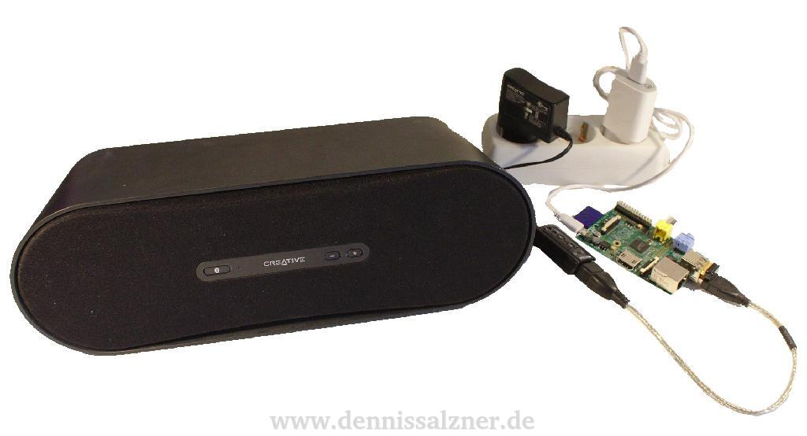
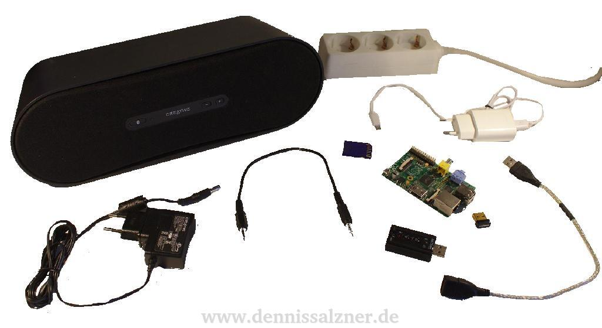

What
A small speaker and a small single board computer with some Linux software is all that is required to build a wireless WiFi speaker. With it you will be able to listen to music within WiFi range and optionally control the playback with your smartphone.

I will describe the process of installing Linux on an older single board computer (Raspberry Pi Model A,. 2011.12) via SD card, connecting it to WiFi (using an Edimax EW-7811Un USB Adapter) and configuring PulseAudio, a so-called “network-capable sound server”. We will connect a USB sound card and powered speaker for better sound quality than the on-board soundcard/PWM signal generator of the Raspberry Pi. A USB speaker with audio-in and therefore with an integrated USB sound card could also be used. On an additional computer (desktop, server or another single board computer) the Music Player Daemon (MPD) will run. It plays music and will be configured to output audio via pulseaudio, that will in turn send the audio to the WiFi speaker. MPD can be configured such that the output device, i.e. which wirless speaker to play music on, can be switched via the output options. The playback and output device selection can then be controlled via the MPDDroid Android App on a mobile phone. It is therefore easy to expand your speaker setup to more than one speaker.
The information in this guide is taken from multiple online resources (blogs, forum posts, documentation). I will state sources where possible. The typical disclaimer applies: I’m not responsible for any damages to your Raspberry Pi.
The combined material cost is around 70 Eur for high-quality speakers. Nevertheless, I recommend commercial wireless speakers to those who don’t want to spend the time to set this up or don’t feel they have the technical expertise to do so. If you want a maintainance free plug and play solution, then there are easier, but more expensive solutions. These solutions will typically require additional monthly fees for a streaming service you may not already have. The streaming service will requires an internet connection and will most probably analyse your data. This not only reveals your taste in music, but also what times you are typically at home, how your mood is and perhaps if you’re single or not. The high spread of identical devices may also make off-the-shelf wireless speakers more suspectable to hacker attacks. But that is beyond the scope of this guide.
When
WiFi speakers have been popping up in retail stores everywhere. I like the idea of having a small speaker in the kitchen, bedroom or bathroom to listen to music. The system needs to be convinient though and I want to be able to use my existing music playback software i.e. the Linux Music Player software. The PulseAudio sound server has been around for a while. It is now standard in most Linux distributions and is often the cause of a lot of frustration. The reason for the frustration is the additional layer between the soundcard and the application that can make debugging a sound problem difficult. But pulse audio has been substantially improved over the past years. One advantage of a network audio serve like PulseAudio is the ability to playback music on one Linux device running PulseAudio and send the sound to another Linux device running PulseAudio. This is exactly what we will be doing with the single-board computer on the receiving end of the audio stream. This enables us to send audio from any application to our WiFi speaker.
Background
Required Hardware

This build requires some hardware:
- Raspberry Pi (price as of writing: 29,95 Eur)
- a computer (or another Raspberry Pi) running Music Player Daemon
- SD Card (8 GB SdHc)
- USB Power Connector for the PI. Note a 1A USB Charger was not sufficiant for running the Raspberry Pi, Soundcard and WiFi Dongle in my test. I used a 3A USB Charger instead.
- Wifi USB Dongle (Edimax EW-7811Un, price as of writing: 5,90 Eur)
- USB sound card (around 8 Eur) and Speaker (i.e. Creative D100, around 29,67 Eur) or Spreaker with integrated USB sound
Connect the SD card and USB power adapter to the Raspberry Pi and then add the USB Wifi Dongle and USB sound card. The speaker connects to the USB sound card. Connect the speaker and USB power adapter to a power source.
Software
For the software I use a standard desktop computer running Ubuntu, PulseAudio and the Music Player Daemon (MPD). The single-board computer, i.e. a Raspberry Pi, runs Rasbian Strecth Lite and PulseAudio. The Android smart phone for controlling playback and switching output devices/speakers runs an App called “MPDDroid” that controls MPD.
How
Raspberry Pi Installation
The first steps are to install the Raspberry Pi, connect it to the WiFi and enable SSH access.
1. Download the operating system
Download the operating system from: https://www.raspberrypi.org/downloads/raspbian/ I chose “Raspbian Stretch Lite”, Version April 2018, “2018-04-18-raspbian-stretch-lite.zip”
2. Install it on an SD card
Next we need to prepare the SD card. On Linux I follow these steps:
Using fdisk:
- create a new msdos partition table on the SD card
- format the SD Card to the FAT32 filesystem
Unzip the image:
unzip 2018-04-18-raspbian-stretch-lite.zipAnd write it to the SD card: (be sure to correctly set sdX to the SD card)
dd bs=4M if=2018-04-18-raspbian-stretch-lite.img of=/dev/sdX conv=fsync3. Configure WiFi
After connecting the WiFi Dongle, we can configure the WiFi connection. The Wifi connection can be configured without connecting a monitor and keyboard to the Raspberry Pi. To do this mount the SD card on the computer and edit the file “etc/wpa_supplicant/wpa_supplicant.conf” on the “rootfs” partition of the SD card.
vim /media/../rootfs/etc/wpa_supplicant/wpa_supplicant.confand configure your WiFi credentials in that file:
network={
ssid="<your WiFi SSID>"
psk="<your WiFi Password>"
}4. Temporarily enable SSH
We neede to enable SSH in order to remotely login to the Raspberry Pi, as we’re not connecting a monitor, keyboard and mouse.
SSH can be enabled by placing a file named “ssh” onto the boot partition.
touch /media/../boot/sshThis only works for one boot as the file is then automatically removed. We will need to make the SSH daemon auto-boot permanent later.
(see also: 1 )
5. Boot
Unmount the SD card from the computer, insert it into the Raspberry Pi, connect the USB power plug. After some time your WiFi router should should detect a new DHCP connection.
Check your WiFi router for the Raspberry Pi’s IP Address.
6. Login
Now we can log into the Raspberry Pi via SSH.
ssh pi@<IP address of the Raspberry Pi>
password: raspberryAs a side note you can log in to the Raspberry Pi quicker, if you install a tool called “sshpass”. It will allow you to pass the password to the SSH server via command-line”: Of course you should rather change the default password and use SSH key exchange instead.
sudo apt install sshpass
sshpass -p raspberry ssh pi@<Raspberry Pi IP Address>7. Enable SSH permanently
and permanently configure the SSH daemon to auto boot.
systemctl enable sshdRaspberry Pi configuration
Next we configure the Raspberry Pi and install and set up PulseAudio.
1. Connect the USB sound card
Connect the USB sound card.
The system log can be displayed by issueing
dmesgIt should show something similar to this:
I: [pulseaudio] sink.c: sysfs.path = "/devices/platform/soc/soc:audio/bcm2835_alsa/sound/card0"
I: [pulseaudio] sink.c: device.string = "hw:0"
I: [pulseaudio] sink.c: device.buffering.buffer_size = "131072"
I: [pulseaudio] sink.c: device.buffering.fragment_size = "131072"
I: [pulseaudio] sink.c: device.access_mode = "mmap+timer"
I: [pulseaudio] sink.c: device.profile.name = "analog-stereo"
I: [pulseaudio] sink.c: device.profile.description = "Analog Stereo"
I: [pulseaudio] sink.c: device.description = "bcm2835 ALSA Analog Stereo"2. Install PulseAudio
PulseAudio can be installed via the “aptitude” package manager, which comes pre-installed with Rasbian.
sudo apt-get update
sudo apt-get install pulseaudio pulseaudio-module-zeroconf alsa-utils avahi-daemon(see also: 1 )
3. Fix Vi and set root password
Next I usually fix the configuration of the command-line text editor “vi”. Otherwise it runs in a compatiblitiy mode and the arrow keys behave in an unexpected way.
To do this I set the root password, login as root…
sudo passwd
su…and then make the changes
echo 'set nocompatible' >> /root/.vimrc4. Configure and run PulseAudio
Still as root we can configure PulseAudio.
vi /etc/pulse/default.pato the end, add:
load-module module-native-protocol-tcp auth-ip-acl=127.0.0.1;<your IP address Range>
load-module module-zeroconf-publishThis will allow the PulseAudio Daemon to receive audio streams from the local network. In my case is set “192.168.2.0/16” as the IP Address range. If your home network uses a different IP-Address range, you will need to configure this accordingly.
I’ve also added a higher idle timeout, so the soundcard wouldn’t power down the speakers immediatly after a stream ends. This causes crackling until the speaker is ready again.
load-module module-suspend-on-idle timeout=6048005. Setup an auto-start script
At this stage you can test whether PulseAudio runs correctly by issueing:
pulseaudio --log-level=debugWe then set up a script so that PulseAudio loads automatically on boot-up. The provided scripts seem not to work properly and I had more success writing my own:
vi /etc/systemd/system/pulseaudio.service[Unit]
Description=PulseAudio Daemon
Before=sound.target
[Install]
WantedBy=session.target
[Service]
User=pi
BusName=org.pulseaudio.Server
ExecStart=/usr/bin/pulseaudio
Restart=alwaysYou can then enable auto-start of PulseAudio with:
systemctl enable pulseaudioand see if it works by rebooting
shutdown -r nowand checking the status of the PulseAudio service after reboot and logging in again:
systemctl status pulseaudioDesktop Configuration
With this done the Raspberry Pi should be ready to receive audio via PulseAudio. We can now configure the Desktop computer to stream music to it.
1. Install required PulseAudio Plugins
In order to send audio to another computer over the local network with PulseAudio we need to install some PulseAudio Plugins:
sudo apt-get install pulseaudio-module-zeroconf
pacmd load-module module-zeroconf-discover2. Enable discovery of network sound devices in PulseAudio
Paprefs (PulseAudio Preferences) may already be installed on your computer. It is a usefull tool to configure PulseAudio.
sudo apt install paprefs
paprefsWith it we can check the checkbox: “Make discoverable PulseAudio network sound devices available locally” (ger.: “PulseAudio Netzwerk-Audio-Geräte im lokalen Netzwerk auffindbar machen”)
Note this can also be done in the command-line by editing
sudo vim /etc/pulse/default.paand adding
load-module module-zeroconf-discoverto the end.
3. Check for network sound devices with PulseAudio
Once that option is checked a list of all available audio sinks can be shown by running:
pactl list sinks | grep NameThe output should be similar to:
Name: alsa_output.pci-0000_01_00.1.hdmi-stereo
...
Name: tunnel.raspberrypi.local.alsa_output.platform-soc_audio.analog-stereo
Name: tunnel.raspberrypi.local.alsa_output.usb-VIA_Technologies_Inc._USB_Audio_Device-00.analog-stereoWhere the last line is the name of USB sound card audio tunnel to PulseAudio running on the RaspberryPi. The line before that is the on-board sound card/PWM generator on the RaspberryPi you can also use that instead of the USB soundcard, but it doesn’t sound very good.
The volume control widget should show the detected new audio device:
{kind=link}
4. Send audio of an application to the Raspberry Pi
We can now run the PulseAudio volume control:
/usr/bin/pavucontrol-qtStart an application that produces sound such as the Webbrowser showing an Internet Video and set the audio output of that application to the RaspberryPi with the PulseAudio volume control. You should hear the sound coming from the attached speaker.
5. Configure Music Player Daemon (MPD) to send audio to the Raspberry Pi
The Music Player Daemon can be configured to use multiple audio outputs. To do this we edit:
vim /etc/mpd.confand add entries like this:
audio_output {
type "pulse"
name "RaspPiA"
server "127.0.0.1"
sink "tunnel.raspberrypi.local.alsa_output.usb-VIA_Technologies_Inc._USB_Audio_Device-00.analog-stereo"
}Not the IP address of the server is PulseAudio running on the desktop computer and not the RaspberryPi. The IP address is therefore always set to “localhost” or “127.0.0.1”.
You can add multiple such entries for further WiFi Speaker’s. They can then be enabled and disabled at any time in most “Music Player Daemon” Client/Controller applications.
Restart MPD to make the changes take effect:
systemctl restart mpdNow you can select the Raspberry Pi as Audio Output in MPD Client applications such as GMPC (Gnome Music Player Client):
{kind=link}
or in the Android App (MPDroid), in the options menu unter “outputs”:
{kind=link}
{kind=link}
Progress
The WiFi speaker should work well now. Mine has been working reliably for some weeks. I usually leave it turned on as booting the Raspberry Pi can take up to 2.5 minutes and I haven’t found out why yet. A nice feature of MPD is that you can also add radio streams directly via the client applications. The CPU usage is around 20.8% during playback, which is fair.
If you encounter crackling or audio problems one possible fix is to run an update, as Rasbian is improved quite frequently (“sudo rpi-update”).